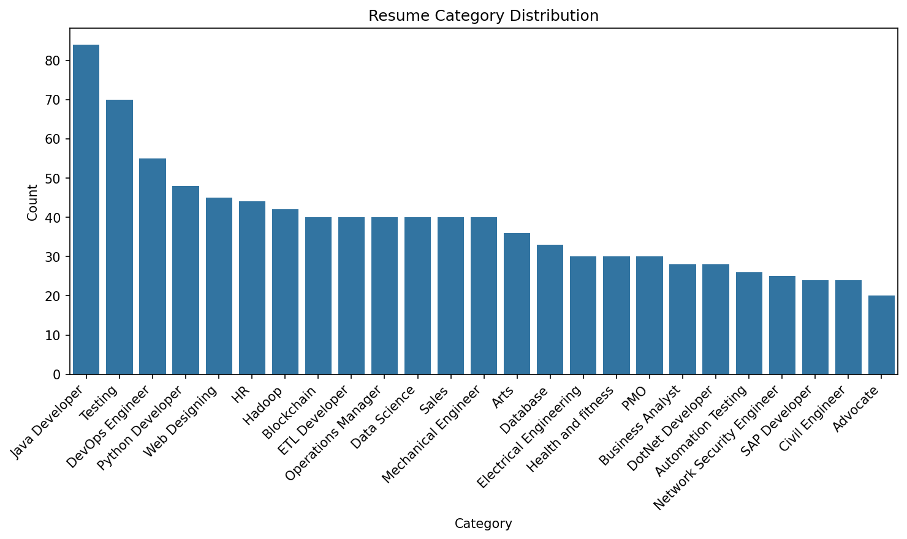
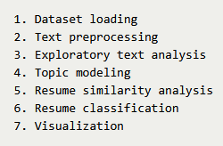
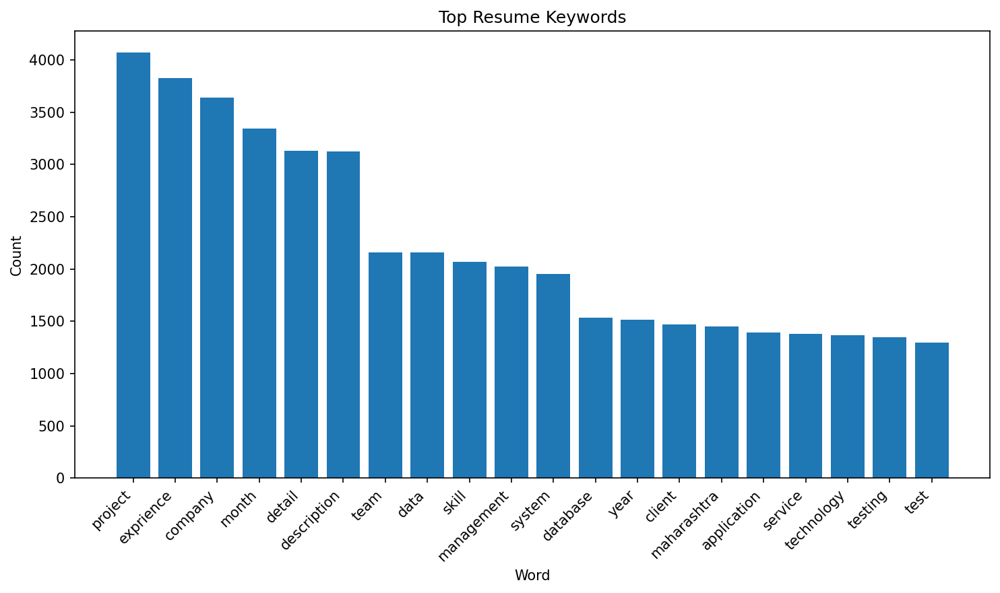
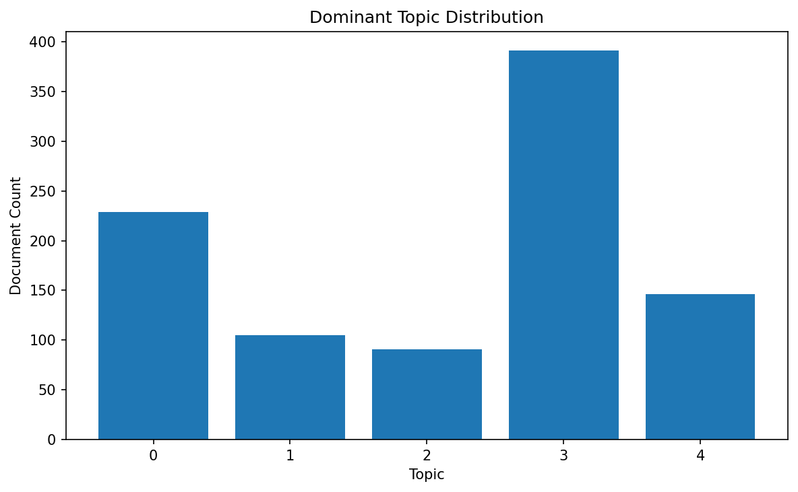
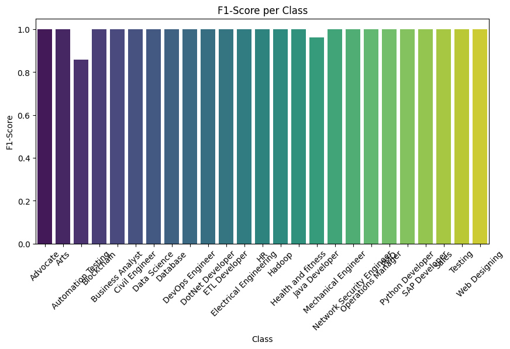
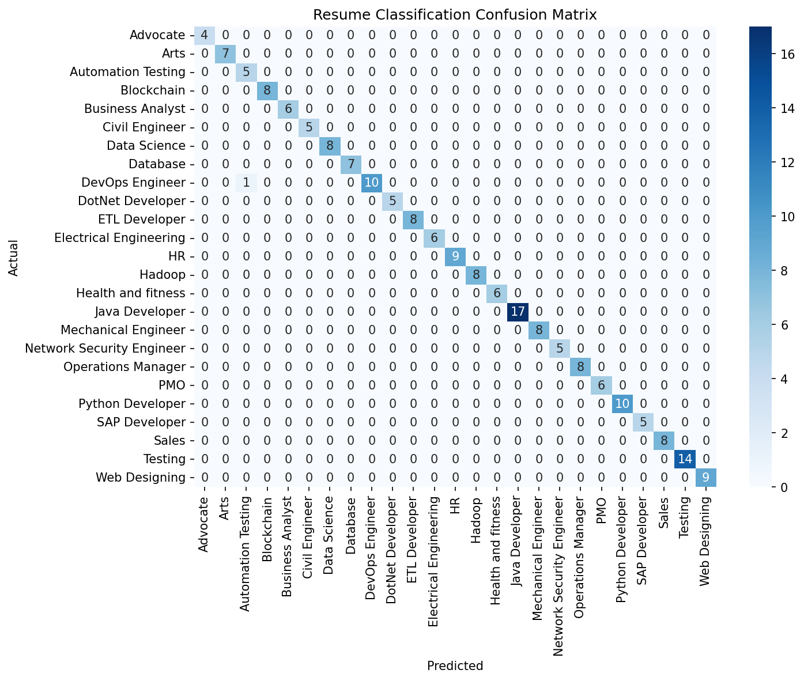

Resume Text Mining and NLP Analysis
Classical NLP pipeline for analyzing resume texts, extracting topics, measuring similarity, and predicting job categories.
Overview
This project demonstrates how classical Natural Language Processing techniques can be applied to resume texts. The workflow cleans and preprocesses raw text, explores common keywords, discovers hidden topics, measures similarity between resumes and job descriptions, and trains a machine learning model to classify resumes into job categories.
The main goal was to build a structured and interpretable NLP pipeline that shows how unstructured text can be transformed into measurable, comparable, and predictive information.
Problem & Dataset
The dataset contains resumes labeled by professional category. The task is to analyze resume content and automatically predict the most likely job category based on the text.
Classification Goal
Predict the job category from resume text.
Example Categories
- Data Science
- HR
- Software Development
- Mechanical Engineering
- Business Analysis
Text Challenges
- Unstructured raw text
- Noisy keywords
- Synonym variation
- Category overlap

class distribution chartNLP Pipeline Architecture
The project was designed as a modular text mining pipeline, where each processing step is handled in a separate script. This makes the workflow reproducible, easier to debug, and suitable for GitHub publication.
Dataset Loading → Text Preprocessing → Exploratory Text Analysis → Topic Modeling → Similarity Analysis → Resume Classification → Visualization

pipeline diagramText Preprocessing
Before analysis, the raw resume texts are cleaned and normalized. This step transforms unstructured text into a more consistent form that can be used for downstream NLP tasks.
Cleaning
Removed punctuation, special characters, numbers, and unnecessary formatting artifacts.
Tokenization
Split resume text into individual words and meaningful text units.
Stopword Removal
Removed common words that add little semantic value to the analysis.
Lemmatization
Reduced words to their base form to improve consistency across similar terms.
Exploratory Text Analysis
Exploratory text analysis was used to identify the most common and meaningful patterns in the resume corpus. This step helps reveal the dominant terminology associated with different job profiles.
Frequency Analysis
Measured the most frequent words and terms across the dataset.
Word Cloud
Created a visual summary of the most dominant resume keywords.
Keyword Analysis
Highlighted important technical and role-specific terms found in resumes.
Synonyms
Used synonym lookup to better understand semantic overlap between different expressions.
 word cloud
word cloud

top keyword frequency chartTopic Modeling
Latent Dirichlet Allocation (LDA) was applied to discover hidden thematic structure in the resume texts. This makes it possible to group documents by semantic similarity and identify topic clusters linked to different professional domains.
The resulting topics capture recurring themes such as technical skills, engineering terminology, business language, or domain-specific role descriptions.

topic distribution chartResume Similarity Analysis
To simulate resume screening, the project compares resumes to a target job description using TF-IDF vectorization and cosine similarity.
This makes it possible to score and rank resumes according to how closely they match a given position. The approach can support candidate screening, job matching, and relevance-based sorting.
Vectorization
TF-IDF converts text into weighted numeric vectors.
Similarity Metric
Cosine similarity measures how close each resume is to the target job description.
Use Case
Candidate ranking and resume-job matching.

F1-score diagramResume Classification
The final stage of the project trains a machine learning model to classify resumes into job categories. A TF-IDF representation of the processed text is used as input for the classifier.
Input Representation
TF-IDF features extracted from cleaned resume text.
Model
Logistic Regression classifier trained on labeled resume categories.
Evaluation
- Accuracy
- F1 Score
- Confusion Matrix

confusion matrixVisualization
The project includes multiple visual outputs to make the text mining workflow easier to interpret. These charts help explain both the structure of the text data and the performance of the classification model.
- Word cloud of dominant resume terms
- Top keyword frequency chart
- Topic modeling visual summary
- Similarity ranking plots
- Category distribution
- Confusion matrix for classification results
Key Takeaways
- Classical NLP methods remain highly useful for structured text mining tasks.
- Text preprocessing strongly affects downstream results, especially in similarity and classification tasks.
- Topic modeling can reveal hidden semantic structure even in short professional documents like resumes.
- TF-IDF and cosine similarity provide a practical baseline for resume-job matching.
- The project demonstrates a reproducible end-to-end NLP workflow that complements more advanced LLM-based approaches.
GitHub Repository
The full source code and pipeline implementation are available on GitHub.